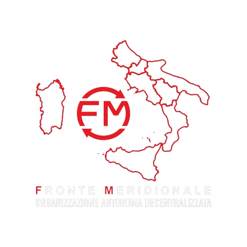

Il Fronte Meridionale
Il Fronte Meridionale nasce con l'obiettivo di costruire un'organizzazione politica autonoma, moderna e radicata sul territorio, capace di rappresentare realmente gli interessi del Mezzogiorno.
Per troppo tempo il Mezzogiorno è stato amministrato da strutture politiche nazionali che hanno limitato ogni reale alternativa di sviluppo, sottraendo risorse ai territori e alimentando sistemi decisionali poco trasparenti.
Il nostro obiettivo è superare questo modello, costruendo una nuova realtà politica fondata sulla partecipazione dei cittadini e sulla responsabilità nella gestione delle risorse pubbliche.
Tesoreria pubblica e verificabile.
Ogni donazione è consultabile da chiunque.
Ogni donazione è consultabile da chiunque.